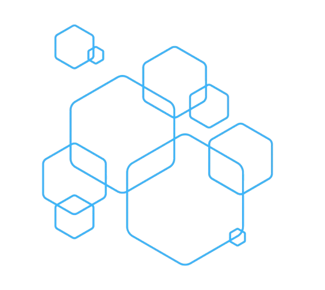

GjøDev er en liten nettsidetjeneste drevet av en ung utvikler fra Toten som går IT og medieproduksjon på Gjøvik videregående. Jeg lager moderne og enkle nettsider for privatpersoner og små bedrifter – med fokus på design, brukervennlighet og kundeopplevelser. Perfekt for deg som vil være synlig på nett. Jeg tilbyr også drift av nettsidene, dersom dette er ønskelig. Ta gjerne kontakt dersom du har noen spørsmål!
- Sondre Syversen
